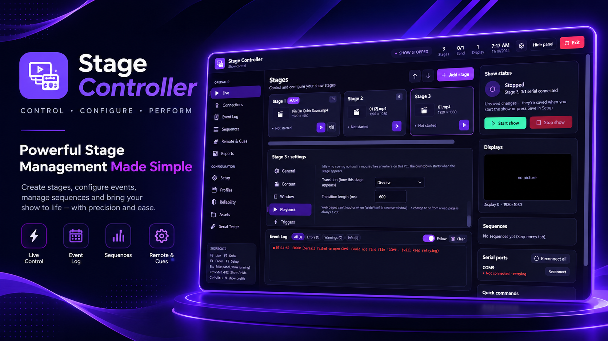

Windows app · 2024 – Present
Stage Controller: Windows App for Interactive Installations
A standalone Windows app that runs multi-display shows with video, image, and web content, driven by touch and Arduino input.
About this project
Stage Controller is the standalone Windows version of my Dynamic Stage Manager, a framework I first built in Unity for interactive installations. I upgraded it into a .NET 8 / WPF app that no longer needs Unity. It runs a show of "stages" (images, videos, or web pages) across one or more monitors. Stages switch on serial input from Arduinos, on touch gestures, or on conditions based on other stages. A control panel lets operators set up the show, run it live, and test serial input without hardware. Since the first version it has grown into a full show-control tool, with sequences, profiles, a phone web remote, extra cue sources (OSC, UDP, TCP, MIDI), show reports, and a reliability layer for installations that run unattended.
Key features
- Stages with image, video, or web page content, shown fullscreen or in a movable window, with per-stage transitions
- Multi-display output, with extra outputs so one stage can drive several monitors
- Serial input from Arduinos on multiple COM ports, with automatic reconnect
- More cue sources: OSC, UDP, TCP, MIDI, and keyboard keys, with an optional IP allow-list
- Touch gestures: press, release, hold, swipe, multi-tap, long swipe, hold and release, and three-point rotation
- Touch triggers that can be armed by a serial key, and trigger conditions on other stages (all or any)
- Sequences that play a timeline of stages, and profiles that switch between complete shows with Ctrl+Alt+1–9 or a cue
- PIN-protected web remote for a phone or tablet, with live status over WebSocket
- Show reports with stage plays, cues received, unmapped cues, and automatic restarts, exportable as CSV or HTML
- Reliability for unattended installs: a watchdog that restarts stalled stages, window re-placement after HDMI unplug, scheduled start and stop, a nightly restart, and a crash-restart launcher
- Asset checker that finds missing files and files on risky locations (USB, network, Desktop) and copies them into the project folder
- Operator panel with Live, Connections, Event Log, Sequences, Remote & Cues, Reports, Setup, Profiles, Reliability, Assets, and Serial Tester tabs, plus a live preview of the displays
- Serial tester to send cue keys without hardware, global shortcuts, tray icon, and a single-instance guard
- Safe config saving with a backup, and a pre-start checklist for missing files and displays
My contribution
I upgraded my Unity-based Dynamic Stage Manager into this standalone Windows application, then extended it with sequences, profiles, the web remote, show reports, and the reliability tools for long-running installations.